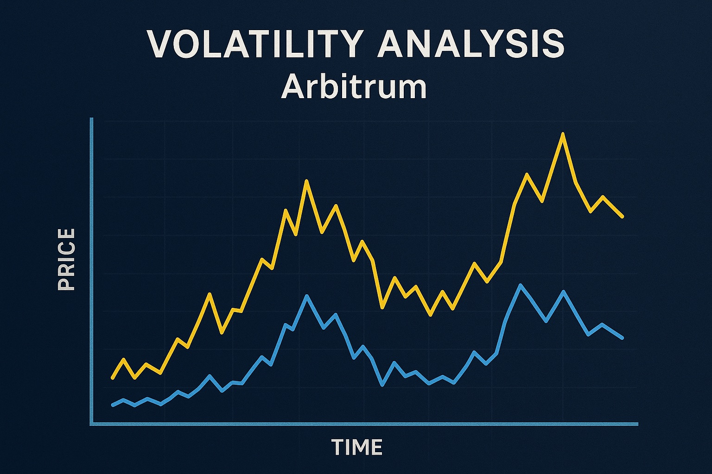

Arbitrum Price Prediction for End of 2025: In-Depth Analysis and Insights
The information in this article is provided for educational purposes only and is not investment advice. Cryptocurrency investments carry risks.
Introduction
As of August 20, 2025, 01:15 AM EEST, Arbitrum (ARB) is trading at approximately $0.63, reinforcing its position as a leading Layer-2 scaling solution for Ethereum. Developed by Offchain Labs, Arbitrum enhances Ethereum’s scalability by processing transactions off-chain while maintaining security through optimistic rollups. With a market cap of around $2.54 billion, Arbitrum supports a growing ecosystem of decentralized applications (dApps), DeFi protocols, and NFT marketplaces. This article provides a comprehensive analysis of ARB’s price outlook for the end of 2025, exploring bullish and bearish scenarios, key growth drivers, and potential risks based on current market trends and ecosystem developments.

Current Situation
As of August 20, 2025, Arbitrum’s price is around $0.63, reflecting a 6.73% decrease over the past 7 days but a 5.00% increase over the past month. Over the last 30 days, ARB has recorded 12/30 (40%) green days with a volatility of 7.82%, indicating moderate price fluctuations. The Fear and Greed Index at 62 suggests a greedy market sentiment, driven by Arbitrum’s growing adoption in DeFi and Ethereum’s scaling ecosystem. Over the past year, ARB has risen from $0.50, achieving a 26% gain. Since its launch in March 2023 at $1.11, ARB has faced challenges but remains 64.04% below its all-time high of $2.39 from January 2024. Recent developments, such as the Arbitrum Orbit chain launches and increased total value locked (TVL) of $3.2 billion, signal strong ecosystem growth.
Price Predictions for End of 2025
Analyst forecasts for Arbitrum by December 2025 vary due to its dependence on Ethereum’s performance and Layer-2 adoption. Bearish scenarios suggest a potential decline to $0.40–$0.50 if a projected 30–50% market correction occurs in early 2025 or if Ethereum’s ecosystem faces challenges. Moderate projections estimate ARB stabilizing between $0.80 and $1.20, supported by steady growth in DeFi and dApp adoption. Bullish forecasts predict ARB could reach $1.50–$2.50, particularly if a market rebound occurs between February and April 2025 or if Ethereum’s scaling solutions gain further traction. Some optimistic analysts project Arbitrum hitting $2.00–$3.00 by late 2025, driven by increased TVL and Arbitrum Orbit chain deployments.
Factors Driving Price Growth
- Ethereum Scaling Demand: Arbitrum’s role as a leading Layer-2 solution benefits from Ethereum’s high gas fees and growing dApp ecosystem.
- DeFi and NFT Adoption: Arbitrum’s low-cost, high-speed transactions attract DeFi protocols and NFT marketplaces, boosting TVL and ARB demand.
- Arbitrum Orbit Chains: Customizable Orbit chains enable enterprises and developers to build tailored blockchains, expanding Arbitrum’s ecosystem.
- Market Rally: A projected cryptocurrency market surge in 2025, particularly from February to April, could create a favorable environment for ARB’s price growth.
- Developer Activity: With over 400 dApps and growing developer support, Arbitrum’s ecosystem continues to attract investment and innovation.
Risks and Downward Factors
- Market Volatility: A projected 30–50% market correction in early 2025 could exert downward pressure on ARB’s price, impacting investor sentiment.
- Competition: Other Layer-2 solutions like Optimism, Polygon, and zkSync could challenge Arbitrum’s market share in Ethereum’s scaling ecosystem.
- Regulatory Risks: Stricter global regulations on cryptocurrencies could limit Arbitrum’s accessibility and adoption, particularly in DeFi.
- Ethereum Dependency: A slowdown in Ethereum’s growth or adoption could negatively impact Arbitrum’s ecosystem and ARB’s price.
Volatility Analysis
From July to August 2025, Arbitrum’s price fluctuated between $0.58 and $0.70, reflecting a short-term correction with a volatility of 7.82%. Despite a 6.73% decline over the past week, ARB’s annual performance shows a 26% gain since August 2024. Technical indicators suggest mixed signals: the 50-day moving average is rising, indicating short-term bullish momentum, while the 200-day moving average shows longer-term consolidation. Support levels at $0.60 and resistance at $0.80 suggest potential for recovery. A projected market recovery from February to April 2025 could support price growth, particularly as Arbitrum expands its TVL and Orbit chain deployments. Its role in Ethereum’s scaling ecosystem positions it well for sustained adoption and potential value appreciation.
Conclusion
By the end of 2025, Arbitrum’s price is projected to range between $0.80 and $1.50, with the potential to reach $2.00–$3.00 in a bullish market driven by Ethereum’s scaling demand, DeFi and NFT adoption, and Arbitrum Orbit chain growth. However, investors should remain cautious of market volatility, competition from other Layer-2 solutions, regulatory uncertainties, and Ethereum’s performance. Thorough research and risk management are essential before investing in Arbitrum.